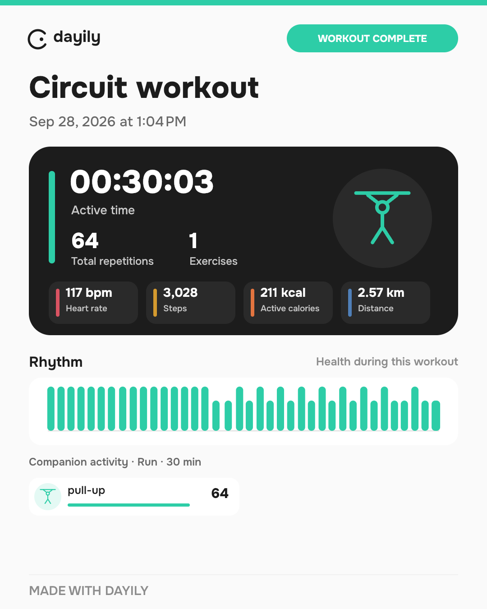

Log a set with a tap
Set your reps and load in advance, then record each following set with a tap.
Your workout journal
Train in circuits or fit a few sets into your day. Log your reps with a tap — Dayily saves your progress and lets you know when your rest is over.
Get it on Google PlayCircuit · pull + dip
During your workout
Reps, load, and rest time are all on the workout screen. Recording a set takes a moment.
Set your reps and load in advance, then record each following set with a tap.
Choose a rest interval and Dayily will alert you when it ends. You can also keep the screen awake while you train.
Record bodyweight exercises, added weight, and counterweight assistance in the same workout.
Train your way
Build a circuit with your favourite exercises and work through the rounds at your own pace.
Or practise one exercise in short sets throughout the day, keeping plenty in reserve. That’s Grease the Groove (GTG). Dayily saves every set and shows how many reps you’ve done.
GTG · today
Log a set and get on with your day. Your reps are already in the journal.
Short sessions and full workouts are saved in the same journal.
Choose how long to rest between sets. If you enable the rest timer, Dayily will alert you when the interval ends.
Apple Health and Health Connect
Your watch records heart rate and activity while you log sets in Dayily. With your permission, the app can add available Apple Health or Health Connect data to your workout report.
View runs, rides, and other workouts from Apple Health or Health Connect alongside the sessions you record in Dayily.
Dayily can match your session with an activity recorded at the same time and add duration, distance, heart rate, and energy expenditure to the report.
Available measurements depend on your device, platform, permissions, and what your watch or band records.
Exported from the app
This share card combines a circuit log with a run recorded at the same time. The measurements shown depend on the device and permissions.

Free and Premium
Your workouts are stored on your phone and available offline. Logging workouts and keeping your full history on the device is free. Premium expands cloud storage and sync.
For logging workouts and keeping your history on your phone.
For keeping more workouts in the cloud and syncing between devices.
See the app for Premium terms and pricing. This website does not sell subscriptions or collect payment information.
In development
We are working on interactive exercise animations to help you examine each movement and understand the technique.
Set logging, a rest timer, workout history, and reports with activity data.
Explore the movement in detail before trying the exercise.
Recording a set should take seconds, leaving you more time to train.
Log your reps, time your rest, and look back at your results in Dayily.